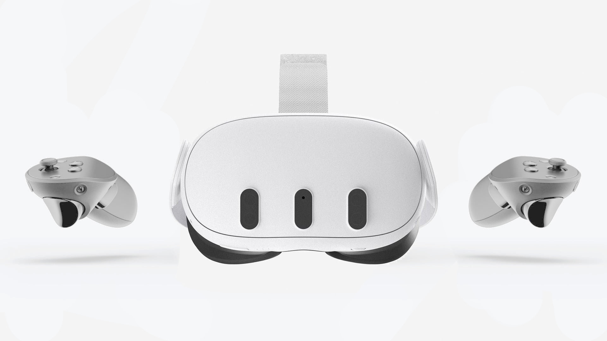

Today's Tech of the Day
Meta's New VR, Meta Quest 3
Jordan Hernandez
The Meta Quest 3 makes its entrance into the consumer market as Meta's third standalone Quest headset, now offering full-color passthrough previous headsets did not offer making it a device capable of augmented reality. Full-color passthrough now allows features like apps to run while viewing the world through the headset cameras with much less distortion in a seamless fashion, allowing a user to open multiple windows for seamless multitasking, similar to having multiple physical monitors.
What it Means
A lot may not care for the release of this headset, but it is a good competitor. Apple has unveiled the Apple Vision Pro showing off its features of 3D recording to relive moments and its multitasking capabilities, the Apple way. Apple never strays from making their devices seamless with each other, that is the Apple ecosystem. Meta is also a very large company but those who pay attention know that Meta is not a very good company either with issues revolving around privacy. Apple is a much more trustworthy competitor, but that comes at the cost of around $3,500 dollars compared to the Quest 3 starting at $499.99. Personally, as an owner of a Quest 2, i would love to try the new Quest 3’s AR capabilities but I would certainly not use it as my daily driver in terms of work, as I am a person who cares about internet privacy.
| Product | Price |
|---|---|
| Quest 3 | 499.99 |
| Vision Pro | 3499.99 |